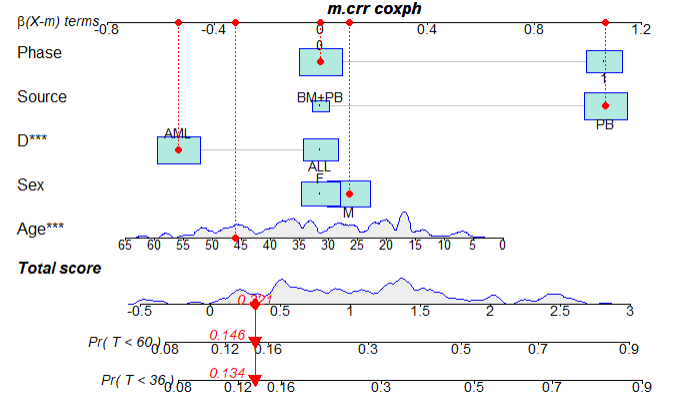

rm(list = ls())
data("bmtcrr",package = "casebase")
str(bmtcrr)
## 'data.frame': 177 obs. of 7 variables:
## $ Sex : Factor w/ 2 levels "F","M": 2 1 2 1 1 2 2 1 2 1 ...
## $ D : Factor w/ 2 levels "ALL","AML": 1 2 1 1 1 1 1 1 1 1 ...
## $ Phase : Factor w/ 4 levels "CR1","CR2","CR3",..: 4 2 3 2 2 4 1 1 1 4 ...
## $ Age : int 48 23 7 26 36 17 7 17 26 8 ...
## $ Status: int 2 1 0 2 2 2 0 2 0 1 ...
## $ Source: Factor w/ 2 levels "BM+PB","PB": 1 1 1 1 1 1 1 1 1 1 ...
## $ ftime : num 0.67 9.5 131.77 24.03 1.47 ...11 竞争风险模型列线图绘制
竞争风险模型(Competing Risk Model)适用于多个终点的生存数据，传统的生存分析(survival analysis) 一般只关心一个终点事件(即研究者感兴趣的结局)。将其他事件均按删失数据(Censored Data)处理，要求个体删失情况与个体终点事件相互独立，结局不存在竞争风险。
竞争风险模型(Competing Risk Model) : 指的是在观察队列中，存在某种已知事件可能会影响另一种事件发生的概率或者是完全阻碍其发生,则可认为前者与后者存在竞争风险。
比如我们研究某药物和肠癌复发的关系，感兴趣事件是肠癌复发，但是研究过程中病人因为心梗死了，这样就观察不到感兴趣事件了，那心梗死亡就可以被叫做竞争风险事件。
下面介绍下如何通过间接的方法绘制竞争缝线模型的列线图。
竞争风险模型的列线图和校准曲线还有专门的R包实现，这部分内容请参考Chapter 32：竞争缝线模型的列线图和校准曲线。
11.1 加载数据和R包
探讨骨髓移植和血液移植治疗白血病的疗效，结局事件定义为复发，某些患者因为移植不良反应死亡，定义为竞争风险事件。
这个数据一共7个变量，177行。
Sex: 性别，F是女，M是男D: 疾病类型，ALL是急性淋巴细胞白血病，AML是急性髓系细胞白血病。Phase: 不同阶段，4个水平，CR1，CR2，CR3，Relapse。Age: 年龄。Status: 结局变量，0=删失，1=复发，2=竞争风险事件。Source: 因子变量，2个水平：BM+PB(骨髓移植+血液移植)，PB(血液移植)。ftime: 生存时间。
# 竞争风险分析需要用的R包
library(cmprsk)11.2 竞争风险模型（多因素分析）
做完了单因素分析，再看看竞争风险模型的多因素分析。
首先要把自变量单独放在一个数据框里，使用中发现一个问题，这里如果把分类变量变为因子型不会自动进行哑变量编码，所以需要手动进行哑变量编码！
但是我这里偷懒了，并没有进行哑变量设置！实际中是需要的哦！！
covs <- subset(bmtcrr, select = - c(ftime,Status))
covs[,c(1:3,5)] <- lapply(covs[,c(1:3,5)],as.integer)
str(covs)
## 'data.frame': 177 obs. of 5 variables:
## $ Sex : int 2 1 2 1 1 2 2 1 2 1 ...
## $ D : int 1 2 1 1 1 1 1 1 1 1 ...
## $ Phase : int 4 2 3 2 2 4 1 1 1 4 ...
## $ Age : int 48 23 7 26 36 17 7 17 26 8 ...
## $ Source: int 1 1 1 1 1 1 1 1 1 1 ...指定failcode=1, cencode=0, 分别代表结局事件1与截尾0，其他默认为竞争风险事件2。
# 构建竞争风险模型
f2 <- crr(bmtcrr$ftime, bmtcrr$Status, covs, failcode=1, cencode=0)
summary(f2)
## Competing Risks Regression
##
## Call:
## crr(ftime = bmtcrr$ftime, fstatus = bmtcrr$Status, cov1 = covs,
## failcode = 1, cencode = 0)
##
## coef exp(coef) se(coef) z p-value
## Sex 0.0494 1.051 0.2867 0.172 0.86000
## D -0.4860 0.615 0.3040 -1.599 0.11000
## Phase 0.4144 1.514 0.1194 3.470 0.00052
## Age -0.0174 0.983 0.0118 -1.465 0.14000
## Source 0.9526 2.592 0.5469 1.742 0.08200
##
## exp(coef) exp(-coef) 2.5% 97.5%
## Sex 1.051 0.952 0.599 1.84
## D 0.615 1.626 0.339 1.12
## Phase 1.514 0.661 1.198 1.91
## Age 0.983 1.018 0.960 1.01
## Source 2.592 0.386 0.888 7.57
##
## Num. cases = 177
## Pseudo Log-likelihood = -267
## Pseudo likelihood ratio test = 23.6 on 5 df,结果解读：在控制了竞争分险事件后，phase变量，即疾病所处阶段是患者复发的独立影响因素(p =0.00052)。
11.3 列线图
regplot包绘制列线图。但是它目前只适用coxph()、lm()和glm()返回的对象。
因此我们需要对原数据集加权创建一个新数据集用于为竞争风险模型分析，使用mstate包中的crprep()创建加权数据集,然后使用coxph()对加权数据集进行竞争风险模型拟合，这样就可以画列线图了。
首先是加载数据和R包：
rm(list = ls())
data("bmtcrr",package = "casebase") # 还是这个数据
library(mstate) # 加权用到的R包
bmtcrr$id <- 1:nrow(bmtcrr) # 创建id
# phase变为2分类，不然列线图不好解释
bmtcrr$Phase <- factor(ifelse(bmtcrr$Phase=="Relapse",1,0))
str(bmtcrr)
## 'data.frame': 177 obs. of 8 variables:
## $ Sex : Factor w/ 2 levels "F","M": 2 1 2 1 1 2 2 1 2 1 ...
## $ D : Factor w/ 2 levels "ALL","AML": 1 2 1 1 1 1 1 1 1 1 ...
## $ Phase : Factor w/ 2 levels "0","1": 2 1 1 1 1 2 1 1 1 2 ...
## $ Age : int 48 23 7 26 36 17 7 17 26 8 ...
## $ Status: int 2 1 0 2 2 2 0 2 0 1 ...
## $ Source: Factor w/ 2 levels "BM+PB","PB": 1 1 1 1 1 1 1 1 1 1 ...
## $ ftime : num 0.67 9.5 131.77 24.03 1.47 ...
## $ id : int 1 2 3 4 5 6 7 8 9 10 ...然后是对原数据进行加权：
df.w <- crprep("ftime", "Status",
data=bmtcrr,
trans=c(1,2),# 要加权的变量，1表示结局事件，2表示竞争风险事件
cens=0, # 删失
id="id",
# 要保留的协变量
keep=c("Age","Sex","D","Source","Phase"))
head(df.w)
## id Tstart Tstop status weight.cens Age Sex D Source Phase count failcode
## 1 1 0.00 0.67 2 1.0000000 48 M ALL BM+PB 1 1 1
## 2 1 0.67 9.50 2 1.0000000 48 M ALL BM+PB 1 2 1
## 3 1 9.50 13.07 2 0.9679938 48 M ALL BM+PB 1 3 1
## 4 1 13.07 17.23 2 0.8730924 48 M ALL BM+PB 1 4 1
## 5 1 17.23 20.83 2 0.8536904 48 M ALL BM+PB 1 5 1
## 6 1 20.83 28.53 2 0.8120469 48 M ALL BM+PB 1 6 1
df.w$T<- df.w$Tstop - df.w$Tstart上述代码已经创建一个加权数据集df.w，此时还需要选择failcode==1的行，然后我们才可以在此数据集上使用coxph()函数进行竞争风险分析，不然最后画列线图会报错。
# 参考资料
# https://blog.csdn.net/zhongkeyuanchongqing/article/details/124086113
df.w2 <- df.w[df.w$failcode == 1,]构建cox模型：
m.crr<- coxph(Surv(T,status==1)~Age+Sex+D+Source+Phase,
data=df.w2,
weight=weight.cens,
subset=failcode==1)
summary(m.crr)
## Call:
## coxph(formula = Surv(T, status == 1) ~ Age + Sex + D + Source +
## Phase, data = df.w2, weights = weight.cens, subset = failcode ==
## 1)
##
## n= 686, number of events= 56
##
## coef exp(coef) se(coef) robust se z Pr(>|z|)
## Age -0.02174 0.97850 0.01172 0.01208 -1.800 0.071914 .
## SexM 0.10551 1.11128 0.27981 0.29571 0.357 0.721247
## DAML -0.53163 0.58764 0.29917 0.30613 -1.737 0.082450 .
## SourcePB 1.06564 2.90269 0.53453 0.56000 1.903 0.057051 .
## Phase1 1.06140 2.89040 0.27870 0.28129 3.773 0.000161 ***
## ---
## Signif. codes: 0 '***' 0.001 '**' 0.01 '*' 0.05 '.' 0.1 ' ' 1
##
## exp(coef) exp(-coef) lower .95 upper .95
## Age 0.9785 1.0220 0.9556 1.002
## SexM 1.1113 0.8999 0.6225 1.984
## DAML 0.5876 1.7017 0.3225 1.071
## SourcePB 2.9027 0.3445 0.9686 8.699
## Phase1 2.8904 0.3460 1.6654 5.016
##
## Concordance= 0.737 (se = 0.037 )
## Likelihood ratio test= 28.33 on 5 df, p=3e-05
## Wald test = 27.27 on 5 df, p=5e-05
## Score (logrank) test = 30.49 on 5 df, p=1e-05, Robust = 20.2 p=0.001
##
## (Note: the likelihood ratio and score tests assume independence of
## observations within a cluster, the Wald and robust score tests do not).接下来，我们可以使用regplot()函数绘制nomogram。其实你可以绘制多种不同的列线图，可以参考之前的推文：生存资料列线图的4种绘制方法
library(regplot)
aa <- regplot(m.crr,
observation=df.w2[df.w2$id==25&df.w2$failcode==1,],
failtime = c(36, 60),
prfail = T,
droplines=T)
在这个列线图中，将数据集中id=25的患者各协变量的取值映射到相应的得分，并计算总得分,并分别计算其在36个月和60个月的累计复发概率，此概率即为控制了竞争风险的累计复发概率，分别为：0.134和0.146。